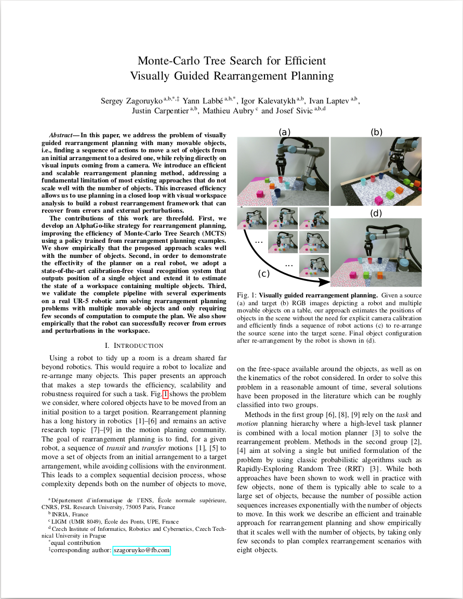

In this paper, we address the problem of visually guided rearrangement planning with many movable objects, i.e., finding a sequence of actions to move a set of objects from an initial arrangement to a desired one, while relying directly on visual inputs coming from a camera. We introduce an efficient and scalable rearrangement planning method, addressing a fundamental limitation of most existing approaches that do not scale well with the number of objects. This increased efficiency allows us to use planning in a closed loop with visual workspace analysis to build a robust rearrangement framework that can recover from errors and external perturbations. The contributions of this work are threefold. First, we develop an AlphaGo-like strategy for rearrangement planning, improving the efficiency of Monte-Carlo Tree Search (MCTS) using a policy trained from rearrangement planning examples. We show empirically that the proposed approach scales well with the number of objects. Second, in order to demonstrate the effectivity of the planner on a real robot, we adopt a state-of-the-art calibration-free visual recognition system that outputs position of a single object and extend it to estimate the state of a workspace containing multiple objects. Third, we validate the complete pipeline with several experiments on a real UR-5 robotic arm solving rearrangement planning problems with multiple movable objects and only requiring few seconds of computation to compute the plan. We also show empirically that the robot can successfully recover from errors and perturbations in the workspace.
|  |
S. Zagoruyko*, Y. Labbé*, I. Kalevatykh, I. Laptev, J. Carpentier, M. Aubry and J. Sivic Monte-Carlo Tree Search for Efficient Visually Guided Rearrangement Planning arXiv preprint arXiv:1904.10348 [Paper on arXiv] |
@misc{1904.10348,
Author = {Sergey Zagoruyko and Yann Labbé and Igor Kalevatykh and Ivan Laptev and Justin Carpentier and Mathieu Aubry and Josef Sivic},
Title = {Monte-Carlo Tree Search for Efficient Visually Guided Rearrangement Planning},
Year = {2019},
Eprint = {arXiv:1904.10348}}
We provide the training and evaluation data as well as the state prediction model used in the experiments mentionned in the paper.
If you have the same setup (UR5 robot and Robotiq 3-Finger Adaptive Robot gripper), you can use the model for extracting object positions from an uncalibrated RGB camera.
This information can be used to perform other tasks with the robot.
Please see the github repository here for more informations.
We thank Loïc Esteve and Ignacio Rocco for helpful discussions. This work was partially supported by the DGA RAPID projects DRAAF and TABASCO, the MSR-Inria joint lab, the Louis Vuitton - ENS Chair on Artificial Intelligence, the ERC grant LEAP (No. 336845), the CIFAR Learning in Machines&Brains program, and the European Regional Development Fund under the project IMPACT (reg. no. CZ.02.1.01/0.0/0.0/15 003/0000468).
The documents contained in these directories are included by the contributing authors as a means to ensure timely dissemination of scholarly and technical work on a non-commercial basis. Copyright and all rights therein are maintained by the authors or by other copyright holders, notwithstanding that they have offered their works here electronically. It is understood that all persons copying this information will adhere to the terms and constraints invoked by each author's copyright .